Modulo 2 · Esercizio 1: Client OneDrive, condivisione e criteri di gruppo
Passo 0 · Installazione del client OneDrive da CMD
Importante
La reinstallazione di OneDrive descritta in questo passo va eseguita su entrambe le macchine: SEA-DEV2 (con User02) e SEA-DEV3 (con User03).
- 1. Accedere a
SEA-DEV2con le credenziali di User02 (poi ripetere suSEA-DEV3con User03) - 2. Scaricare l'installer di OneDrive (
OneDriveSetup.exe) da microsoft.com e salvarlo sul desktop dell'utente. Il resto del materiale del modulo è in Modulo2.zip. - 3. Disinstallare OneDrive.
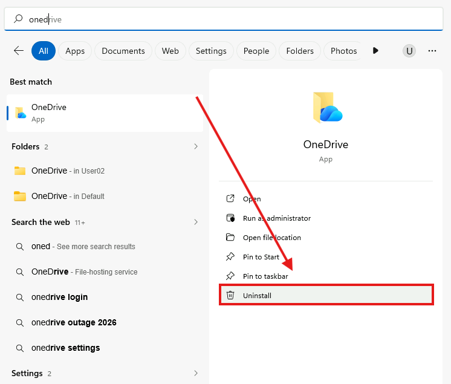
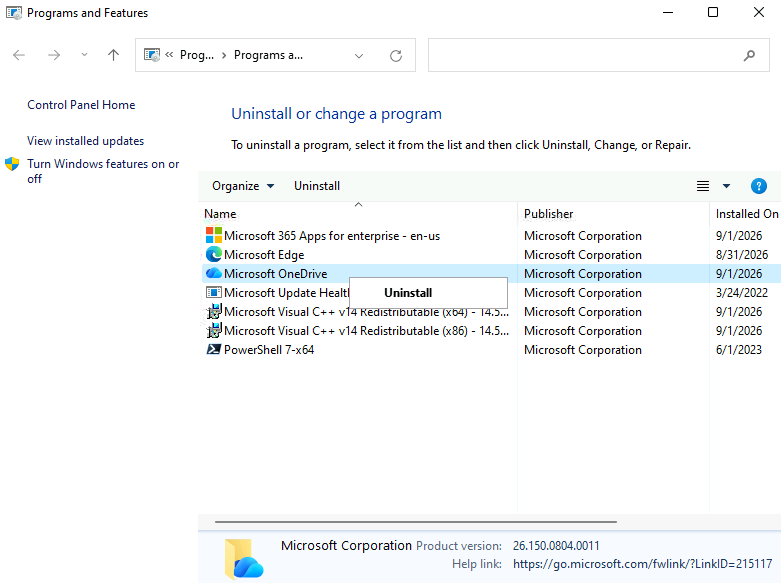
- 4. Una volta disinstallato riavviare (Reboot) la VM.
- 5. Aprire il Prompt dei comandi (CMD) con Esegui come amministratore (Run as administrator).
-
6. Portarsi nella cartella dove si trova l'eseguibile, copiarsi il path dell'eseguibile per il comando ed eseguire il comando di installazione per tutti gli utenti della macchina:
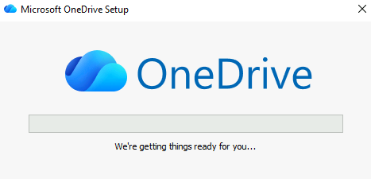
Nota
Lo switch /allusers installa il client OneDrive in modalità per-machine (per tutti gli utenti del dispositivo), invece della modalità predefinita per-utente.
Nota
L'installazione per-machine (/allusers) installa il client in Program Files ed è consigliata per i dispositivi condivisi e per gli ambienti VDI.
Passo 1 · Primo accesso al client OneDrive con User02
- 1. Avviare il client OneDrive (di solito parte automaticamente dopo l'installazione, oppure cercarlo nel menu Start).
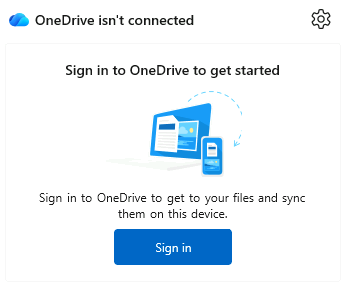
- 2. Accedere con le credenziali di User02, richiede MFA.
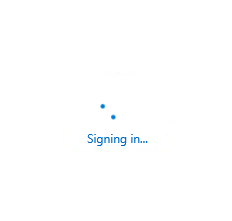
- 3. Durante la configurazione guidata, alla schermata "Sync files from your OneDrive", selezionare solo la cartella Documenti (deselezionare le altre cartelle speciali proposte).
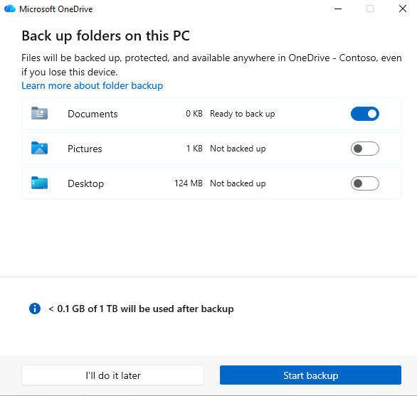
- 4. Completare la configurazione guidata.
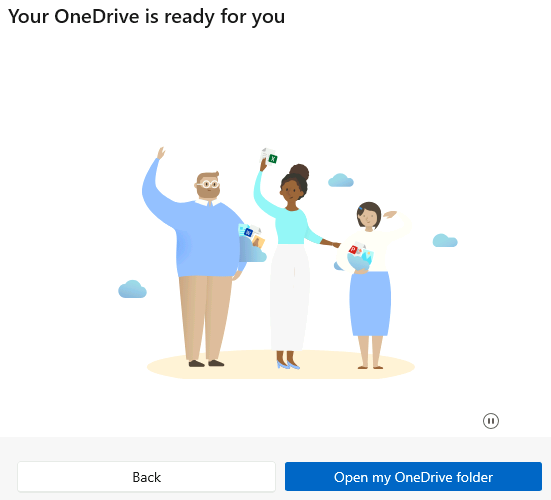
Passo 2 · Copia dei file da Modulo2/Dati sulla root di OneDrive
-
1. Aprire la cartella del materiale del corso:
-
2. Copiare i seguenti elementi sulla root della cartella OneDrive di User02:
- File Word (es.
Word01.docx) - File PowerPoint (
Powerpoint01.pptx) - Le cartelle
FOLDER01eFOLDER02 -
I file .lock e .tmp .
-
3. Verificare nell'Esplora file che i file/cartelle "normali" (doc, ppt, txt, FOLDER01, FOLDER02) mostrino l'icona di sincronizzazione (spunta verde o nuvola) e vengano effettivamente caricati sul cloud.
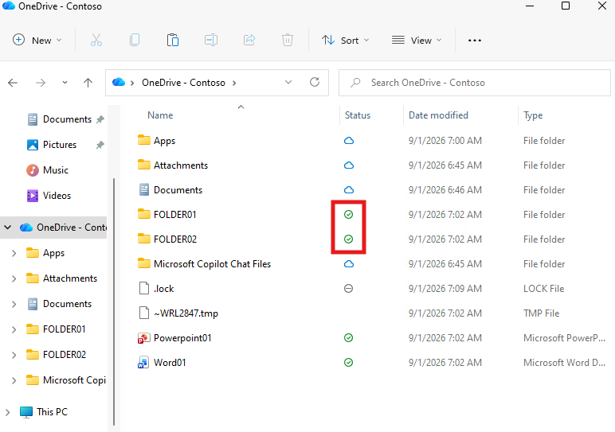
- 4. Verificare invece che il file chiamato (nel caso rinominarlo solo ".lock") .lock e il file che finisce con .tmp vengano copiati sul disco locale ma NON sincronizzati da OneDrive (icona di errore/attenzione, oppure assenti dalla vista web di OneDrive).
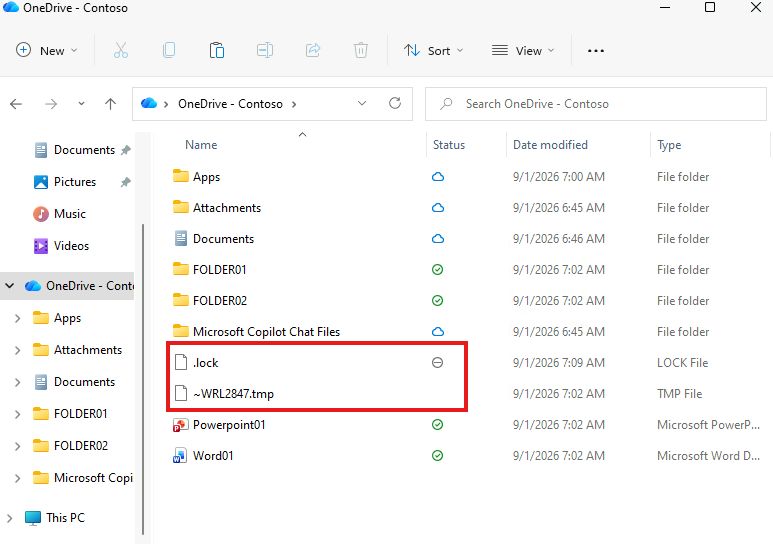
Nota
L'app di sincronizzazione non sincronizza i file .tmp e .ini e rifiuta nomi o tipi di file non validi (es. .lock, desktop.ini, caratteri non consentiti).
Passo 3 · Condivisione di Powerpoint01.pptx in modifica (Can Edit)
-
1. Da User02, fare clic destro su
Powerpoint01.pptxnella cartella OneDrive e selezionare Share (Condividi).
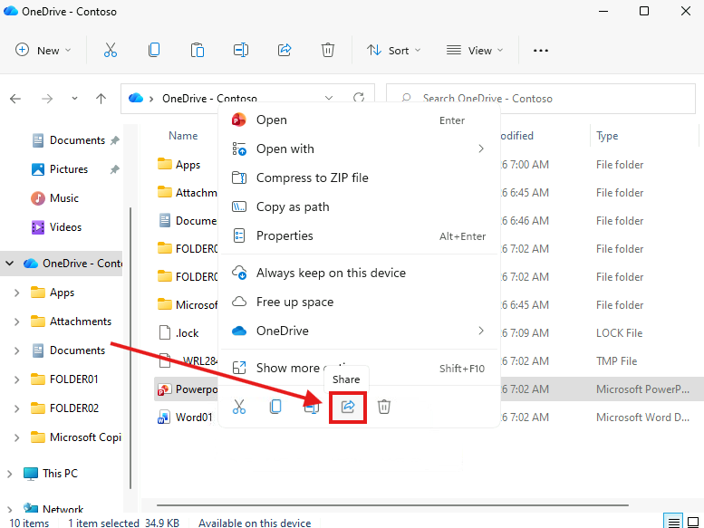
- 2. Impostare il livello di permesso su Can Edit (Può modificare).
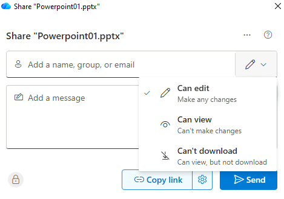
- 3. Nel campo People you choose, selezionare:
- L'utente interno User03
- L'utente Guest (l'account guest invitato nell'esercizio precedente)
- 4. Selezionare Send (non Copy Link), in modo che venga inviata un'email di notifica diretta ai destinatari.
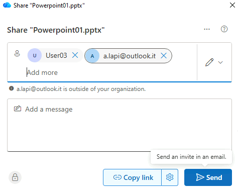
- 5. Accedere a
SEA-DEV3con User03 (login tramite Windows Hello for Business, come configurato nell'Esercizio 6). - 6. Aprire Outlook sul Web e individuare l'email di condivisione ricevuta.
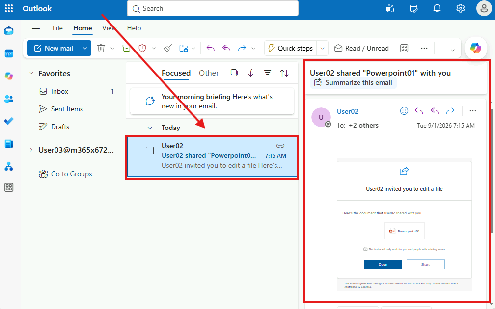
- 7. Aprire il link al file Powerpoint01.pptx: si apre in modalità di modifica online.
- 8. Scrivere qualcosa su una slide e salvare (il salvataggio in OneDrive/PowerPoint per il Web è automatico).
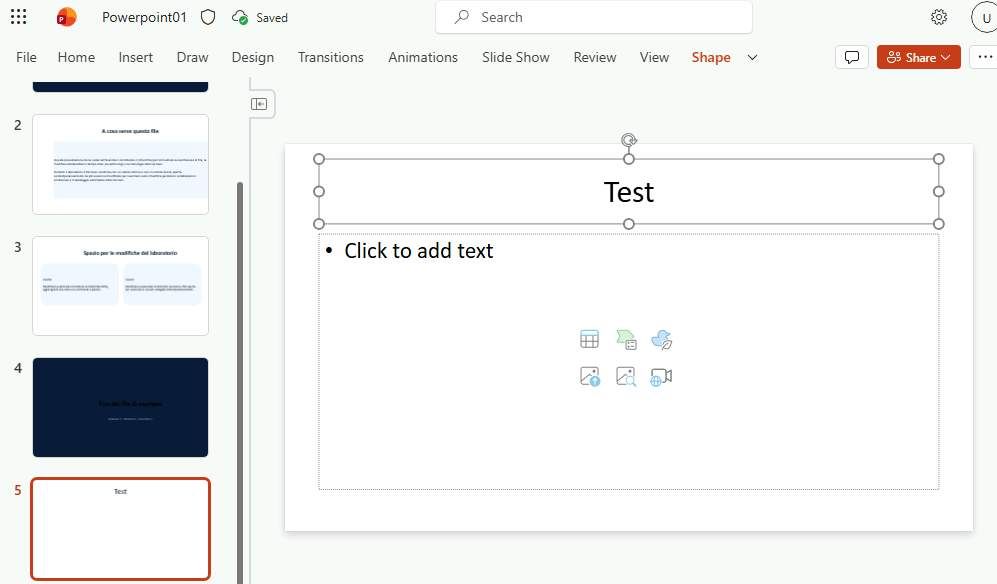
- 9. Lasciare il file aperto nel browser di
SEA-DEV3(necessario per il Passo 5).
Passo 4 · Condivisione con link "Can't Download" e scadenza a 1 mese
- 1. Tornare sulla VM
SEA-DEV2. - 2. Da User02, condividere nuovamente
Powerpoint01.pptx, questa volta con l'opzione Can't Download (Blocca download).
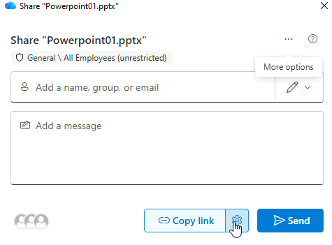
- 3. Impostare Set expiration a 1 mese dalla data odierna.
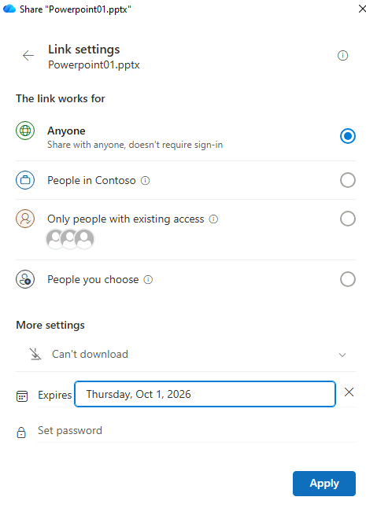
- 4. Selezionare Anyone come opzione di sharing.
- 5. Questa volta selezionare Copy Link (invece di Send), per ottenere l'URL del link di condivisione.
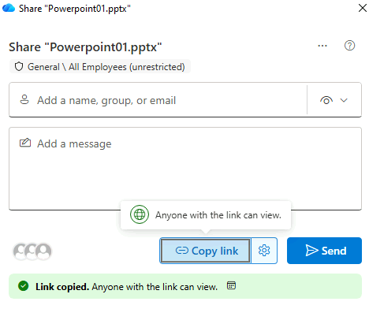
- 6. Aprire una finestra del browser in modalità anonima/InPrivate.
- 7. Incollare il link copiato e aprirlo.
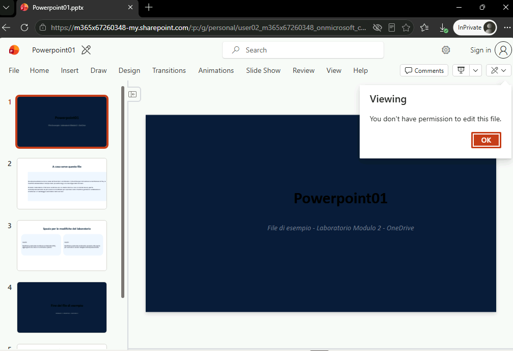
- 8. Verificare che:
- Non venga richiesta alcuna autenticazione per visualizzare il file.
- Il file venga mostrato solo in visualizzazione (senza possibilità di scaricarlo o modificarlo).
- 9. Non chiudere questa finestra: servirà per il Passo 5 come terzo "spettatore" collegato al file.
Attenzione
I link Anyone non richiedono autenticazione: chiunque riceva il link (anche inoltrato) accede al file e non è possibile tracciare chi lo ha aperto. Usarli solo per contenuti non sensibili e sempre con scadenza.
Best practice per la condivisione con utenti non autenticati
Passo 5 · Co-authoring e cronologia versioni
- 1. Tornare su
SEA-DEV2con User02 e aprirePowerpoint01.pptxdalla cartella OneDrive locale. - 2. Apportare una modifica (es. aggiungere del testo su una slide) e salvare.
- 3. Lasciare il file aperto.
- 4. Con il file ancora aperto su
SEA-DEV2, andare su File > Info > Version History (Cronologia versioni).
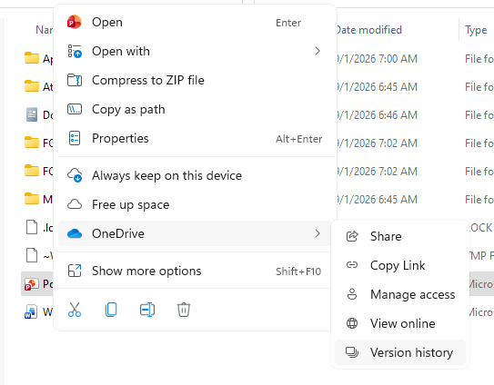
- 5. Aprire una versione precedente del file e osservare il contenuto prima delle ultime modifiche.
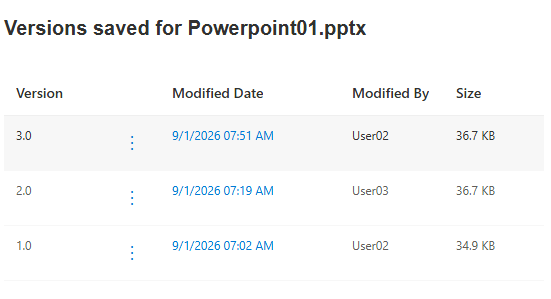
- 6. Tornare alla versione più recente (originale con le modifiche di User02 e User03) senza sovrascrivere la cronologia.
- 7. Notare che User03 ha aperto il .pptx in contemporanea ed è possibile visualizzare la modifica effettuata.
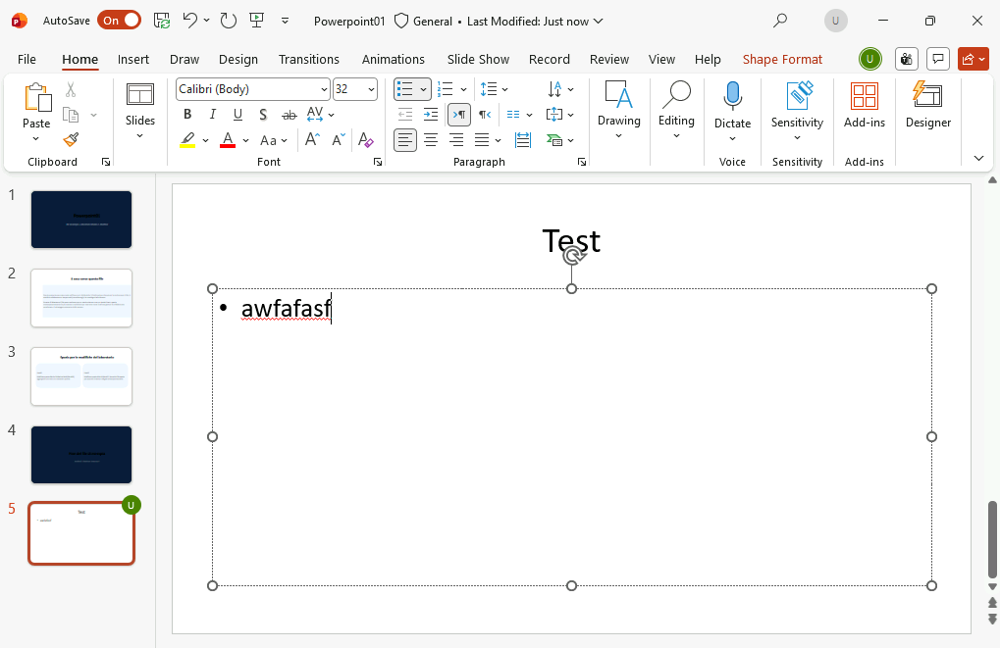
Passo 6 · Gestione degli accessi condivisi (Manage Access)
-
1. Sempre da User02 su
SEA-DEV2, fare clic destro suPowerpoint01.pptx> OneDrive > Manage Access (Gestisci accesso).
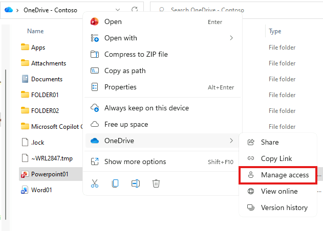
- 2. Nella sezione People, osservare che User03 compare con diritti di modifica (edit) e che non è disponibile un'opzione di scadenza per le condivisioni dirette con persone specifiche.
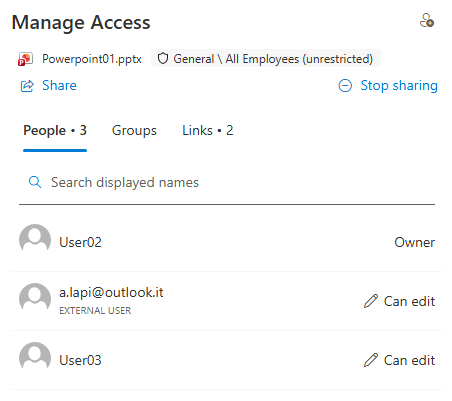
- 3. Modificare il permesso di User03 impostandolo su Can't Download.
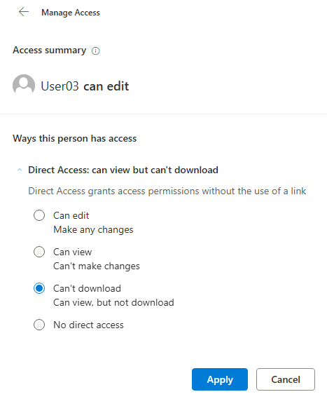
- 4. Nella sezione Links, osservare il link statico "Anyone" con permesso Edit creato in precedenza: qui è visibile la data di scadenza impostata.
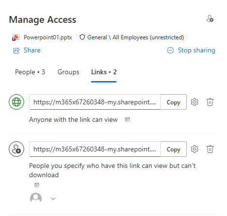
- 5. Eliminare (Remove) questo link e controllare nella scheda in incognito.
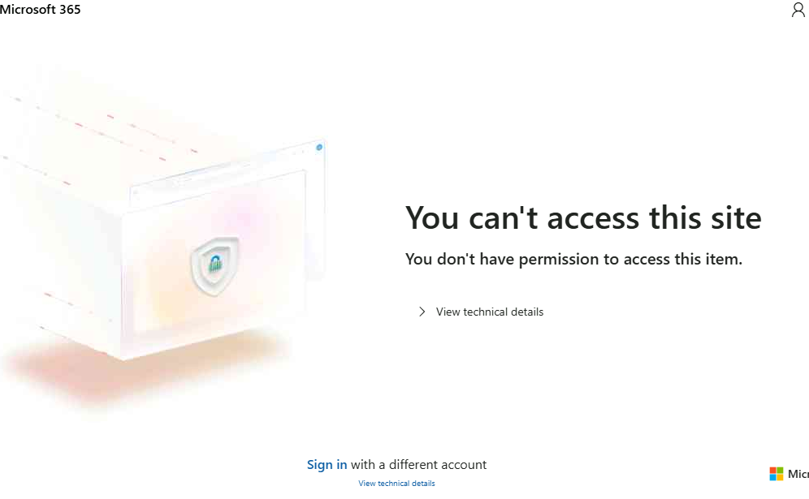
Passo 7 · OneDrive lato User03 via Web (Edge)
- 1. Accedere a
SEA-DEV3con User03 e aprire Microsoft Edge. -
2. Accedere a OneDrive via Web (
https://portal.office.come poi OneDrive). -
3. Aprire la sezione Shared > Shared with me (Condivisi con me): verificare che
Powerpoint01.pptxcompaia nell'elenco.
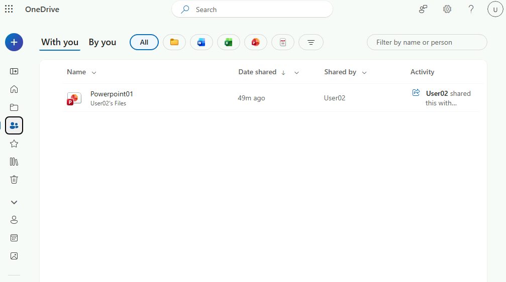
- 4. Aprire la sezione Shared > Shared by me (Condivisi da me): verificare che risulti vuota, poiché User03 non ha condiviso nulla.
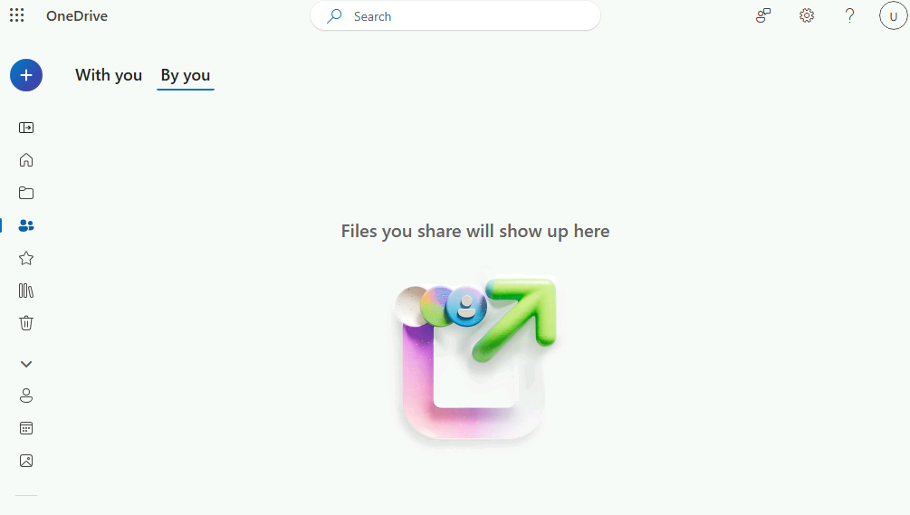
Passo 8 · Eliminazione cartelle e recupero dal cestino
- 1. Tornare su
SEA-DEV2con User02. - 2. Dalla cartella OneDrive locale, eliminare le cartelle
FOLDER01eFOLDER02.
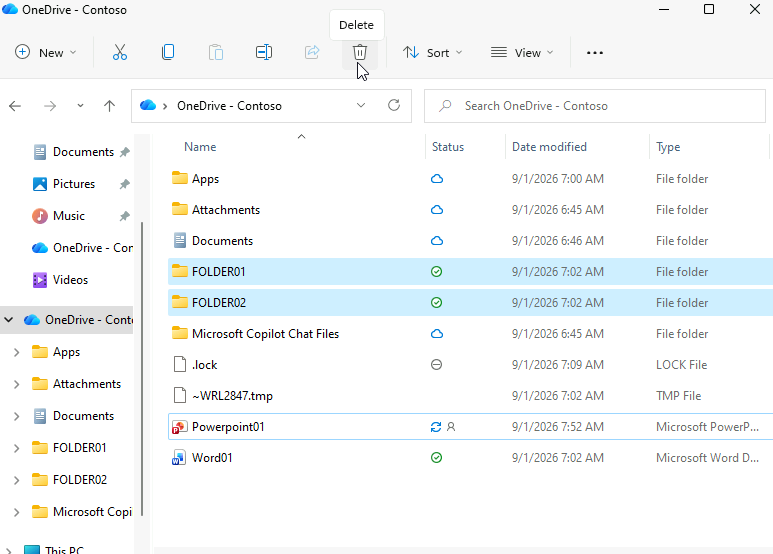
- 3. Accedere a OneDrive via Web e aprire il cestino di primo livello (Recycle bin di OneDrive).
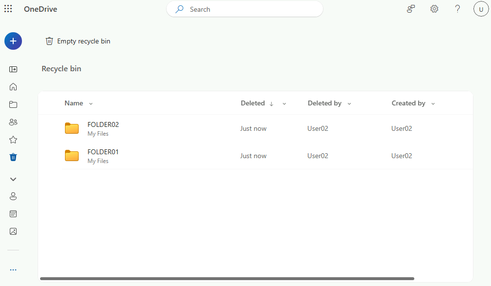
- 4. Dal cestino di primo livello:
- Selezionare
FOLDER01e scegliere Restore (Ripristina): la cartella torna disponibile in OneDrive e si risincronizza sul client.
- Selezionare
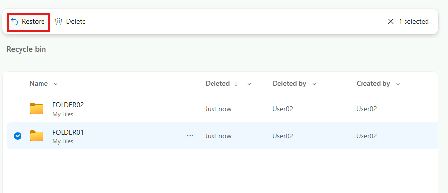
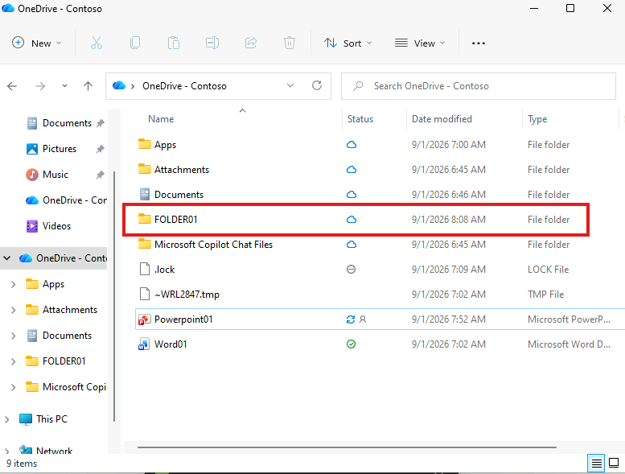
- Selezionare
FOLDER02ed eliminarla definitivamente da qui (Delete).
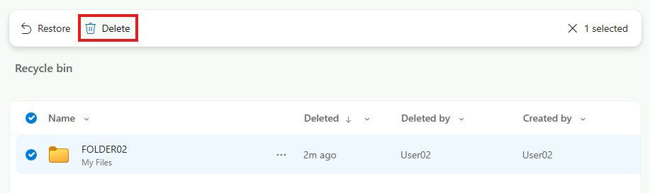
- 5. Accedere ora al cestino di secondo livello (il cestino del sito SharePoint/OneDrive sottostante, raggiungibile dal link "Recycle bin" in fondo al primo cestino).
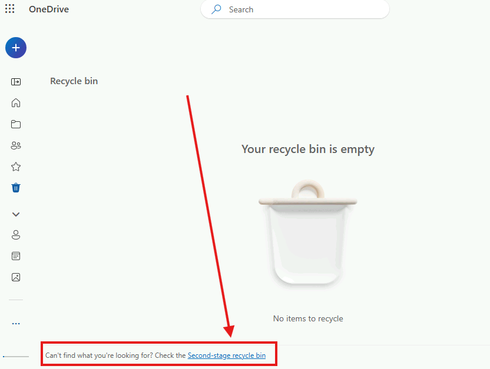
- 6. Individuare
FOLDER02(ora presente nel secondo cestino) ed eliminarla definitivamente.
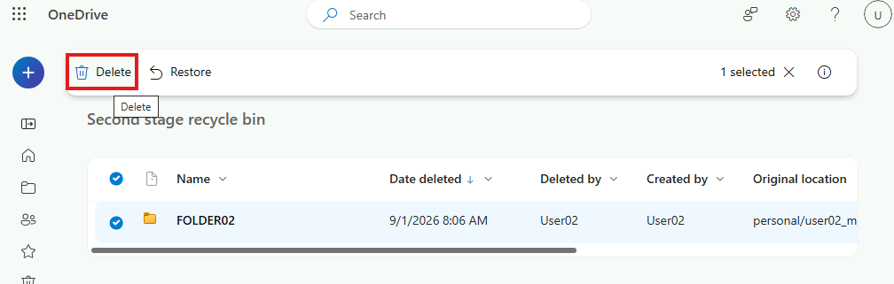
Attenzione
L'eliminazione dal cestino di secondo livello è permanente: il file/cartella non può più essere recuperato in alcun modo.
Nota
In SharePoint e OneDrive gli elementi eliminati sono conservati per 93 giorni complessivi tra cestino di primo e di secondo livello. Il cestino di secondo livello ha una capacità pari al 200% della quota del sito.
Passo 9 · "Always keep on this device" e "Free up space"
- 1. Su
SEA-DEV2, fare clic destro sull'icona OneDrive nella barra delle applicazioni (o sulla cartella OneDrive in Esplora file) e selezionare "Always keep on this device" (Mantieni sempre su questo dispositivo).
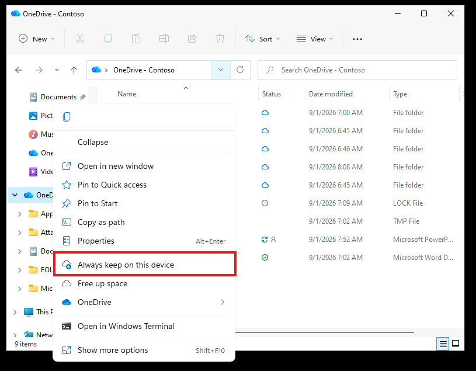
- 2. Verificare che tutti i file nella cartella OneDrive mostrino ora un pallino verde (indicano che sono disponibili offline, scaricati localmente).
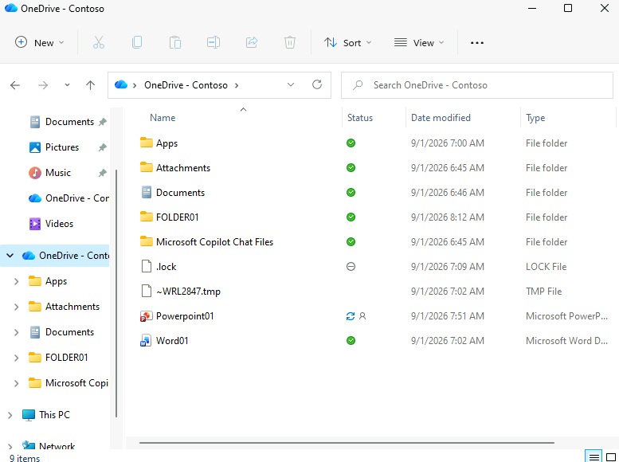
- 3. Ripetere il click destro e selezionare "Free up space" (Libera spazio).
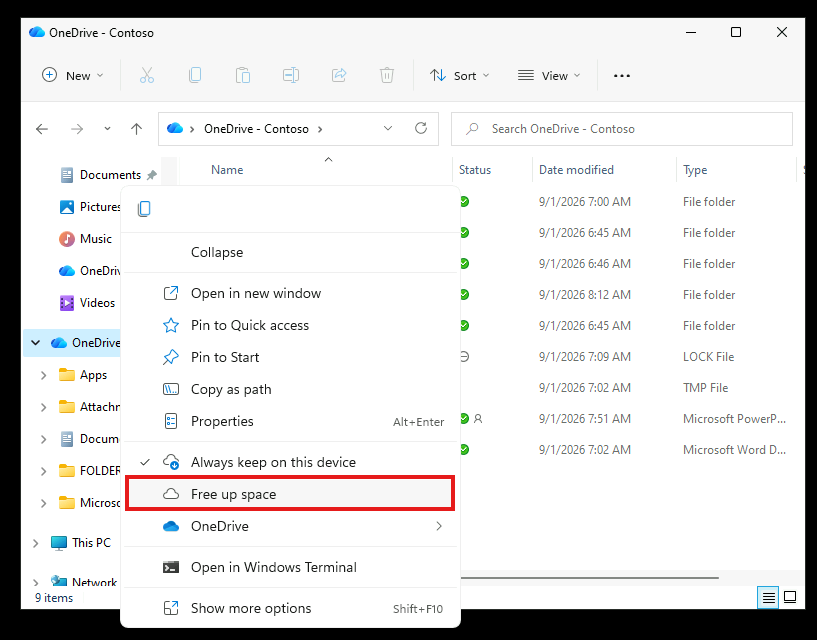
- 4. Verificare che tutti i file mostrino ora l'icona a forma di nuvola (indicano che sono disponibili solo online, contenuto rimosso dal disco locale mantenendo il segnaposto).
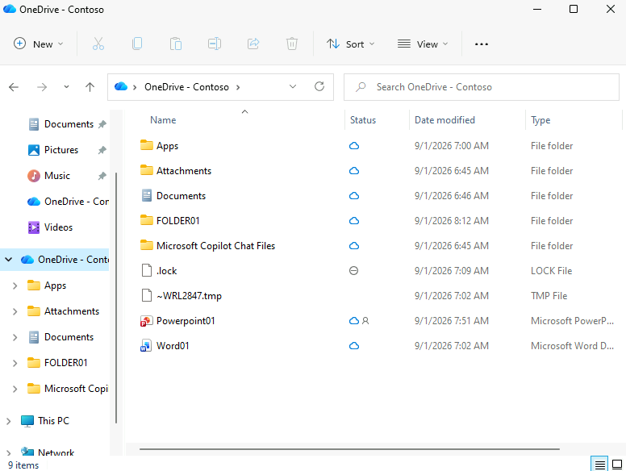
Passo 10 · Configurazione delle policy OneDrive tramite GPEDIT (da SEA-DEV3, User03)
- 1. Andare su
SEA-DEV3come User03. -
2. Copiare il file
onedrive.admxda MATERIALE_STUDENTI/Modulo2/Installer/ (da Modulo2.zip) nella cartella localeC:\Windows\PolicyDefinitions\, richiede permessi da amministratore.
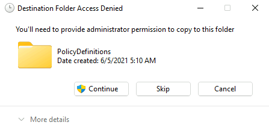
-
3. Copiare il file
onedrive.admlda MATERIALE_STUDENTI/Modulo2/Installer/ (da Modulo2.zip) nella cartella localeC:\Windows\PolicyDefinitions\en-US\, richiede permessi da amministratore. -
4. Avviare
GPEDIT.MSC(Editor Criteri di gruppo locali).
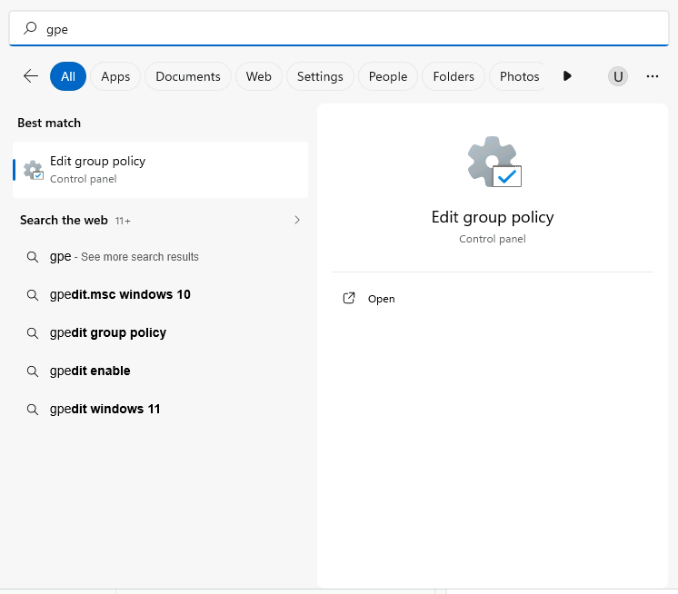
- 5. Nell'editor, navigare su User Configuration > Administrative Templates > OneDrive e configurare le seguenti policy:
A) Prevent users from synchronizing personal OneDrive accounts
-
6. Entrare in User Configuration > Policies > Administrative Templates > OneDrive > Prevent users from synchronizing personal OneDrive accounts
-
7. Premere su Edit, selezionare Enabled e premere OK.
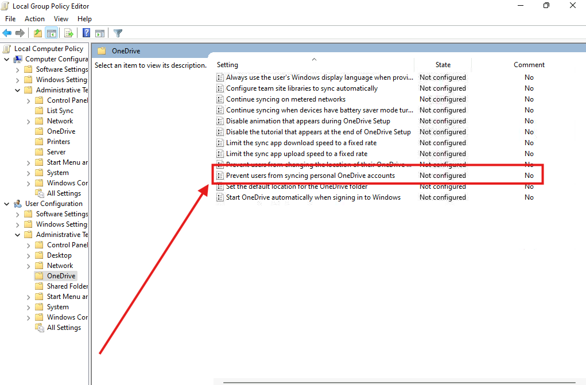
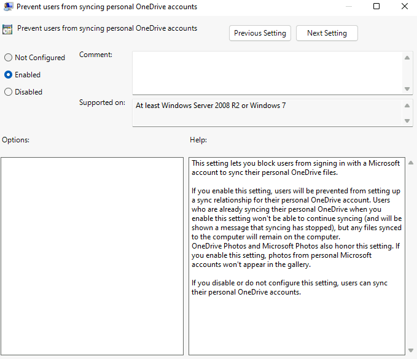
Nota
Impedisce l'aggiunta di account Microsoft personali al client OneDrive, obbligando l'uso del solo account aziendale/scolastico.
B) Allow syncing OneDrive accounts for only specific organizations
-
8. Andare in Computer Configuration > Policies > Administrative Templates > OneDrive > Allow syncing OneDrive accounts for only specific organizations
-
9. Mettere Enabled, e inserire il Tenant ID dell'organizzazione consentita (quello del tenant di laboratorio) nel riquadro rosso vuoto dopo aver premuto Show.
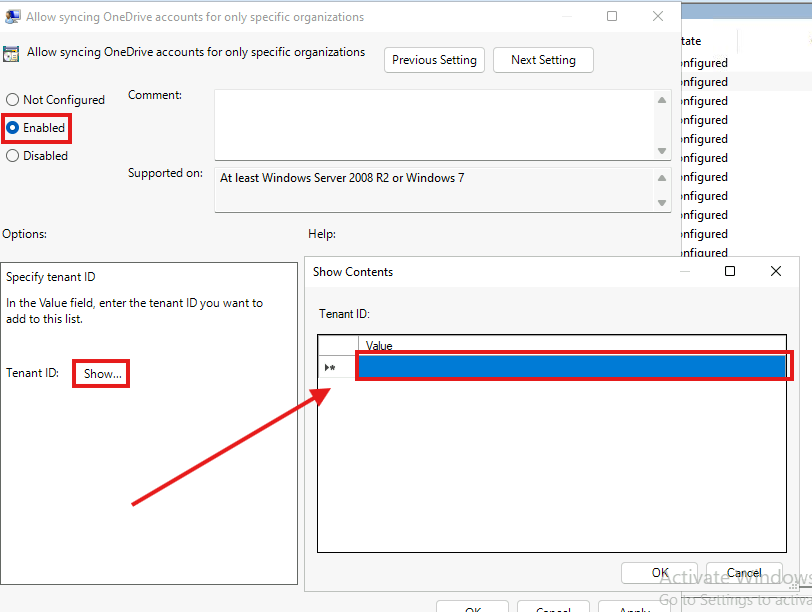
Nota
Impedisce la sincronizzazione di account business appartenenti ad altri tenant, limitando il client OneDrive al solo tenant specificato.
C) Silently sign in users to the OneDrive sync app with their Windows credentials
-
10. Andare su Computer Configuration > Policies > Administrative Templates > OneDrive > Silently sign in users to the OneDrive sync app with their Windows credentials
-
11. Selezionare Enabled e premere OK.
Nota
Riduce gli errori di autenticazione e le configurazioni incomplete, effettuando il login automatico dell'utente Windows già autenticato nel tenant.
Suggerimento
I file OneDrive.admx/.adml aggiornati si trovano anche nella cartella di installazione del client (...\Microsoft OneDrive\<versione>\adm\). In ambienti cloud-only le stesse impostazioni si distribuiscono tramite Intune (Settings catalog).
Usare i criteri OneDrive per controllare la sincronizzazione
Passo 11 · Ulteriori policy OneDrive
D) Use OneDrive Files On-Demand
-
1. Entrare in Computer Configuration > Policies > Administrative Templates > OneDrive > Use OneDrive Files On-Demand
-
2. Impostare la policy su Enabled.
Nota
Rende visibili i file in Esplora file senza scaricare automaticamente tutto il contenuto sul dispositivo (i file restano "on-demand", scaricati solo all'apertura).
E) Silently move Windows known folders to OneDrive
- 3. Andare su Computer Configuration > Policies > Administrative Templates > OneDrive > Silently move Windows known folders to OneDrive e configurare Enabled, specificando il Tenant ID e selezionando solo Documenti e Immagini come cartelle da spostare (lasciando Desktop deselezionato)
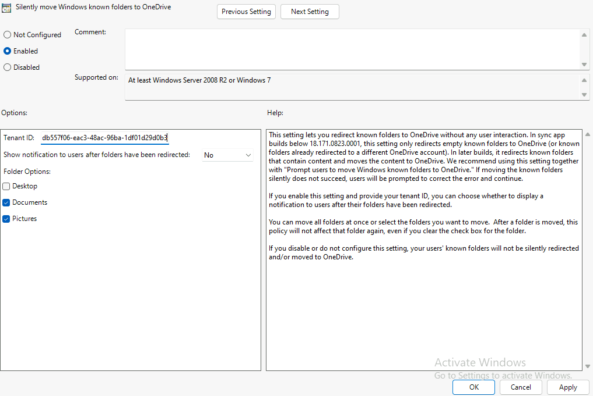
Nota
Reindirizza le cartelle note di Windows supportate (tipicamente Desktop, Documenti e Immagini) verso OneDrive aziendale — in questo esercizio limitato a Documenti e Immagini.
F) Prevent users from redirecting their Windows known folders to their PC
- 4. Recarsi su Computer Configuration > Policies > Administrative Templates > OneDrive > Prevent users from redirecting their Windows known folders to their PC impostare: Enabled
Nota
Impedisce agli utenti di spostare indietro le cartelle note protette da OneDrive al disco locale del PC.
- 5. Riavviare
SEA-DEV3per applicare tutte le policy configurate ai Passi 10 e 11.
Importante
Il Tenant ID si trova in Entra ID > Overview. Le policy Silently move Windows known folders e Silent sign-in funzionano solo con account di lavoro su dispositivi Microsoft Entra joined o ibridi.
Reindirizzare e spostare le cartelle note di Windows in OneDrive
Passo 12 · Login con User03 e verifica delle policy applicate
- 1. Dopo il riavvio, accedere a
SEA-DEV3con le credenziali di User03. - 2. Verificare i seguenti comportamenti automatici, conseguenza delle policy configurate:
- Nessuna configurazione richiesta: avviando OneDrive, il client non chiede alcun setup guidato (login silenzioso grazie alla policy C).
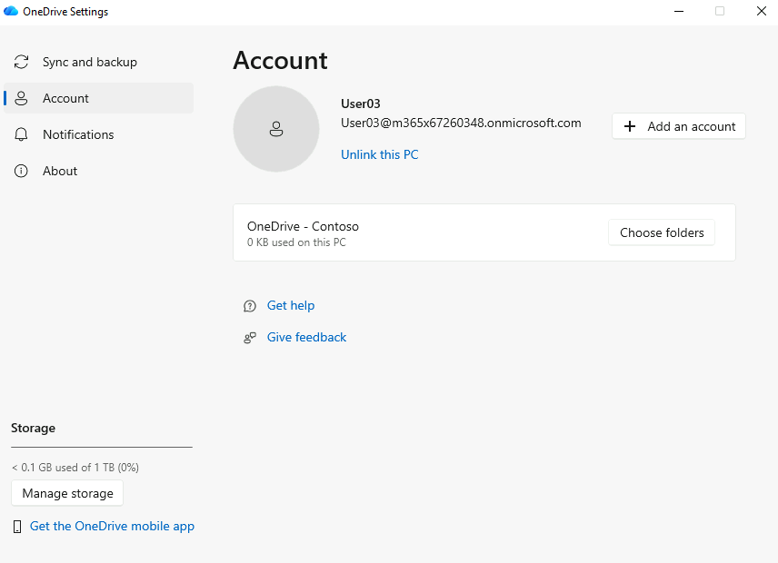
- Documenti e Immagini già sincronizzate: le cartelle sono già reindirizzate e sincronizzate con OneDrive (policy E), e non è possibile modificarle dal pannello Impostazioni di OneDrive (l'opzione risulta bloccata/grigia).
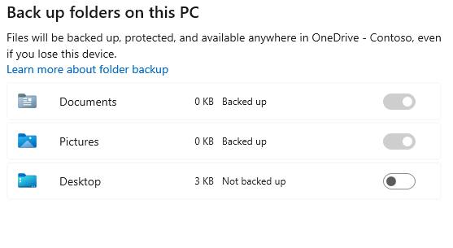
-
Tentativo di "Always keep on this device" globale: provando a forzare tutti i file offline, dopo un breve periodo i file tornano automaticamente online (cloud-only) comportamento atteso quando la policy Files On-Demand (D) è forzata dall'amministratore.
-
Nessuna aggiunta di account personale: tentando di aggiungere un account Microsoft personale al client OneDrive, l'operazione viene bloccata (policy A).